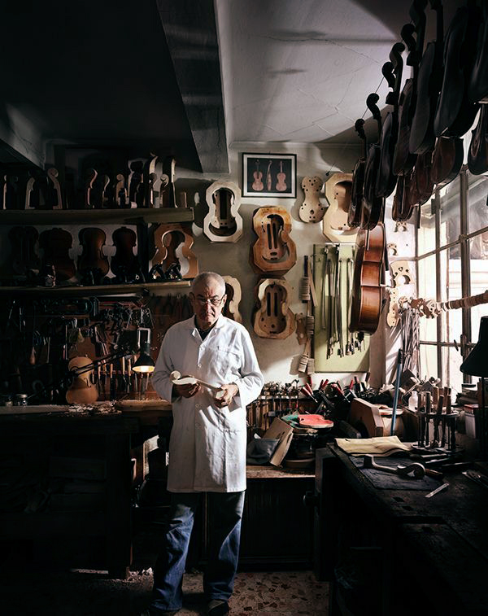
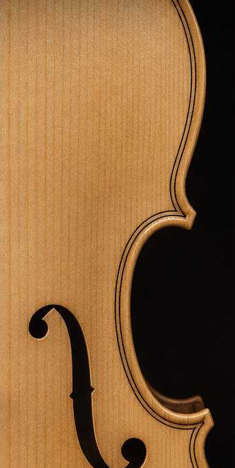
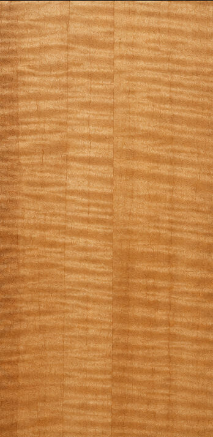
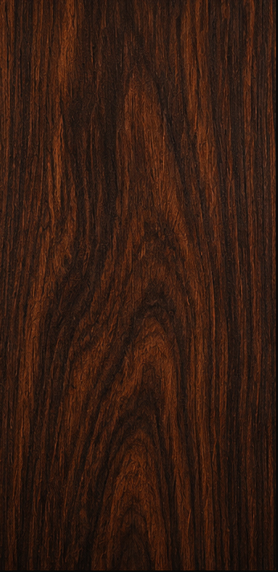
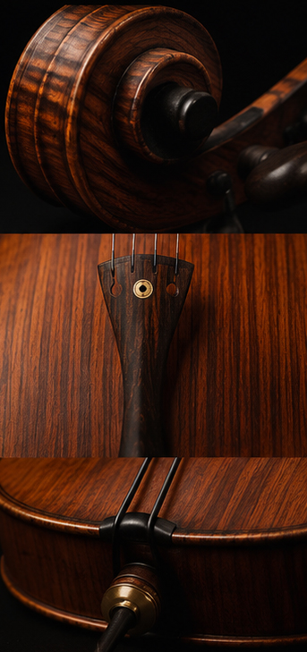
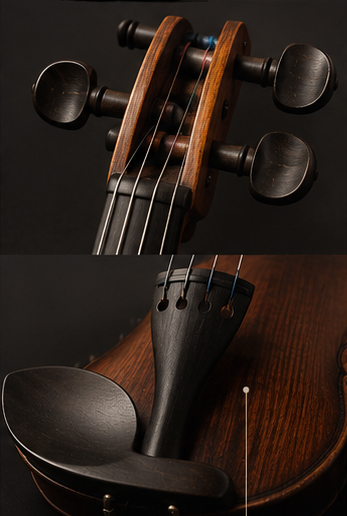

Desde el taller,
directo al escenario
Construcción, restauración y formación en luthería de instrumentos de orquesta

El lugar donde la música toma forma
Somos un taller y escuela de lutería especializado en instrumentos de cuerda clásicos. Construimos, restauramos y enseñamos el oficio con el compromiso de preservar una tradición artesanal que continúa siendo esencial para la música de concierto.
Las voces de la orquesta de cámara
Desde los registros más agudos hasta las notas más profundas, cada instrumento cumple un papel esencial dentro de la orquesta.
- Violín
- Viola
- Guitarra
- Violoncello
- Contrabajo
Detrás del proceso artesanal
Desde la selección de la madera hasta el ajuste final, cada etapa es realizada de forma artesanal para garantizar calidad, equilibrio y carácter.
La materia prima del sonido
Cada madera posee características únicas que influyen en la resonancia, estabilidad y personalidad de un instrumento. Su selección es una parte fundamental del proceso de luthería.
-

Abeto
Tapa armónicaLigero y resonante, ideal para la proyección sonora

-

Arce
Fondo y arosAporta estabilidad, resistencia y riqueza tonal.

-

Palisandro
Detalles y accesoriosValorado por su resistencia y belleza natural

-

Ébano
DiapasónDenso y duradero, utilizado en piezas de precisión

Formación en Luthería
Programas diseñados para acompañar cada etapa del aprendizaje, combinando tradición artesanal, precisión técnica y experiencia práctica.
Del taller al más grande escenario
Desde conservatorios y salas de ensayo hasta teatros de referencia como el Teatro Colón, nuestros instrumentos están pensados para acompañar cada etapa del recorrido musical.